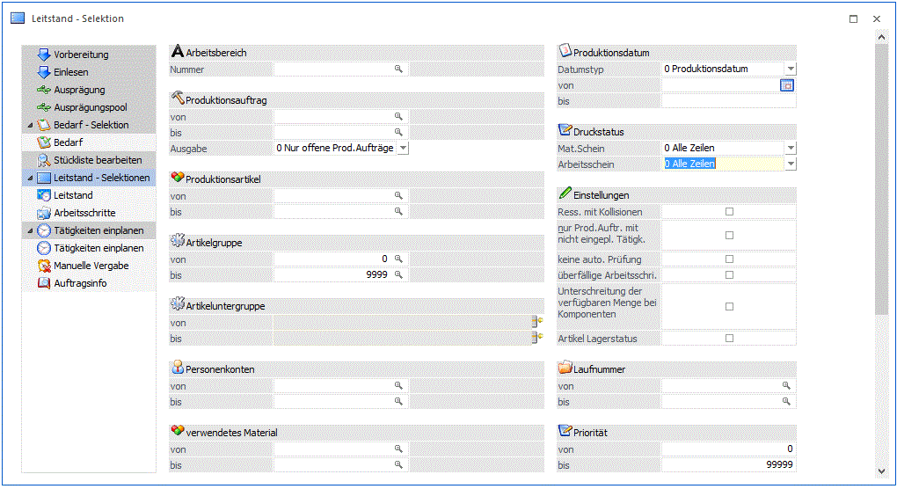
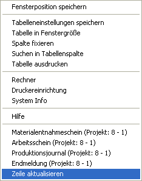

Zunächst erfolgt die Eingrenzung der zu bearbeitenden Projekte:

Ø Arbeitsbereich
Auswahl des Arbeitsbereiches. Mit Hilfe des Arbeitsbereiches können gewisse Einschränkungen wie z.B. der Produktionsartikel bereits vorbelegt werden. Die Anlage des Arbeitsbereichs erfolgt in den Stammdaten.
Ø Produktionsauftrag von/bis
Eingabe aus welchem Projektbereich gewählt werden soll. Wird eine Projektnummer eingegeben, dann wird neben dem Eingabefeld der Artikel angezeigt, der produziert werden soll. Durch einen Klick auf den Artikel wird ein "Drill-Down" durchgeführt. Über die rechte Maustaste kann eingestellt werden, welche Aktion dabei ausgeführt werden soll, wobei die letzte Aktion gemerkt wird. D.h. wenn das nächste Mal mit der linken Maustaste auf den Link geklickt wird, wird die letzte Aktion wieder ausgeführt. Dabei stehen folgende Optionen zur Verfügung:
ü Produktionsdatum
Das ist bei
einer Startproduktion jedes Datum an dem die Produktion beginnen soll bzw. bei
einer Zielproduktion jedes Datum bei dem eine Produktion enden soll.
ü Produktionsstartdatum
Auswahl
jedes Datums, an dem die erste Tätigkeit eingeplant bzw. an dem die Produktion
tatsächlich beginnt.
ü Produktionsenddatum
Auswahl
jedes Datums, mit dem die letzte Tätigkeit eingeplant wurde bzw. an dem die
Produktion endet.
Hinweis
Mit der rechten Maustaste im Feld kann im Kontextmenü-Eintrag "aktuelle Produktionsaufträge" einer der 20 zuletzt verwendeten Produktionsauftragsnummer ausgewählt werden. Die selektierte Produktionsauftragsnummer wird automatisch ins Feld "Produktionsauftragsnummer" eingefügt.
Achtung:
Bei der Option Produktionsdatum und Produktionsstartdatum zählt nur der erste Produktionsstart bzw. nur
das Produktionsende.
Ø Ausgabe
Die folgenden Auswahlmöglichkeiten stehen an dieser Stelle zur Verfügung:
ü 0 - Nur offene Projektzeilen
Mit dieser Option werden nur noch nicht abgeschlossenen Produktionsaufträge für die Bearbeitungen im Leitstand selektiert.
ü 1 - inkl. erledigter Prod. Aufträge
Es werden mit dieser Option sowohl abgeschlossene Produktionsaufträge und noch nicht abgeschlossene Produktionsaufträge für die Bearbeitungen im Leitstand selektiert.
ü 2 - NUR erledigte Prod. Aufträge
Es werden nur die bereits abgeschlossene Produktionsaufträge für die Bearbeitungen im Leitstand selektiert.
ü 3 - Simulationen
Mit dieser Option werden nur Produktionssimulationen für die Bearbeitungen im Leitstand selektiert.
Hinweis
Bei der Ausgabe mit Optionen 1 bis 3 stehen manche Funktionen im Leitstand bzw. im Grafischen Leitstand nur im eingeschränkten Umfang zur Verfügung (s. nachstehenden Details).
Ø Produktionsartikel
Welche Produktionsartikel sollen bearbeitet werden. Wird eine Einschränkung vorgenommen, dann wird neben dem Eingabefeld die Artikelbezeichnung angezeigt. Durch einen Klick auf die Bezeichnung kann eine Drill-Down-Funktion ausgelöst werden. Welche Aktion dabei ausgelöst wird, kann über die rechte Maustaste festgelegt werden (die letzte Einstellung wird gespeichert), wobei folgende Optionen zur Verfügung stehen:
ü Aufruf Info
Es wird der Artikel
in der Artikelinfo im Programm WinLine INFO geöffnet.
ü Artikelstamm
Der Artikel wird
in der WinLine FAKT im Artikelstamm geöffnet.
ü Statistik
Es wird die
Artikelstatistik in der WinLine FAKT geöffnet.
Wird im Feld Produktionsartikel von - bis z.B. nur eine Artikelnummer eingegeben und dieser Artikel hat auch noch Ausprägungen, so werden alle Ausprägungen automatisch mit berücksichtigt. Nur wenn während des Anklicken des "OK-Buttons" die STRG-Taste gedrückt wird, wird nur der Hauptartikel alleine berücksichtigt.
Ø Artikelgruppe
Welche Artikelgruppen sollen bearbeitet werden (betrifft den Produktionsartikel). Wenn auf Artikelgruppen eingeschränkt wird, dann wird neben dem Eingabefeld die Artikelgruppenbezeichnung angezeigt. Durch einen Klick auf die Bezeichnung wird der Artikelgruppenstamm geöffnet.
Ø Artikeluntergruppen
Welche Artikeluntergruppen sollen bearbeitet werden (betrifft den Produktionsartikel).
Ø verwendetes Material
Es werden nur jene Projekte bzw. Arbeitsschritte angezeigt, bei denen das angegebene Material verwendet wird (dies können Komponenten aber auch Halbfertigprodukte sein). Wird eine Einschränkung vorgenommen, dann wird neben dem Eingabefeld die Artikelbezeichnung angezeigt. Durch einen Klick auf die Bezeichnung kann eine Drill-Down-Funktion ausgelöst werden. Welche Aktion dabei ausgelöst wird, kann über die rechte Maustaste festgelegt werden (die letzte Einstellung wird gespeichert), wobei folgende Optionen zur Verfügung stehen:
ü Aufruf Info
Es wird der Artikel
in der Artikelinfo im Programm WinLine INFO geöffnet.
ü Artikelstamm
Der Artikel wird
in der WinLine FAKT im Artikelstamm geöffnet.
ü Statistik
Es wird die
Artikelstatistik in der WinLine FAKT geöffnet.
Ø Ressource
Es werden nur jene Projekte bzw. Arbeitsschritte angezeigt, bei denen die angegebenen Ressourcen reserviert wurden. Wenn eine Einschränkung auf eine Ressource vorgenommen wird, dann wird neben dem Eingabefeld der Ressource der Name angezeigt. Durch einen Klick auf den Namen wird der Ressourcenstamm geöffnet.
Hinweis
Wird eine Ressourcengruppe selektiert, so darf noch keine Feinplanung durchgeführt worden sein (sonst stehen ja schon die geplanten Ressourcen im Projekt).
Druckstatus
Ø Materialentnahmeschein
Mit den folgenden Optionen können Projekte nach dem Druckstatus des Materialentnahmescheines selektiert werden:
ü 0 Alle Zeilen
Arbeitsschritte
werden unabhängig vom Druckstatus des Materialentnahmescheins vorgeschlagen.
ü 1 muss gedruckt sein
Nur jene
Arbeitsschritte werden vorgeschlagen, für die ein Materialentnahmeschein
gedruckt wurde.
ü 2 darf nicht gedruckt sein
Nur jene Arbeitsschritte werden vorgeschlagen, für die noch kein Materialentnahmeschein gedruckt wurde.
Ø Arbeitsschein
Mit den folgenden Optionen können Projekte nach dem Druckstatus des Arbeitsscheines selektiert werden:
ü 0 Alle Zeilen
Arbeitsschritte
werden unabhängig vom Druckstatus des Arbeitsscheins vorgeschlagen.
ü 1 muss gedruckt sein
Nur jene
Arbeitsschritte werden vorgeschlagen, für die ein Arbeitsschein gedruckt wurde.
ü 2 darf nicht gedruckt sein
Nur jene Arbeitsschritte werden vorgeschlagen, für die noch kein Arbeitsschein gedruckt wurde.
Einstellungen
Ø Ressourcen mit Kollisionen
Es werden nur jene Projekte vorgeschlagen, für die Ressourcen reserviert wurden, bei denen es zu einer Kollision kommt (Facharbeiter krank, Maschine in Wartung, usw.)
Ø Nur Projekte, wo keine Reservierung durchgeführt werden konnte!
Auswahl aller Projekte, die in der Produktionsvorbereitung nicht reserviert werden konnten.
Ø Keine automatische Prüfung
Die Artikelbedarfsprüfung bzw. die Prüfung der Ressourcen wird nicht sofort bei Anwahl des Registers Leitstand bzw. Arbeitsschritte durchgeführt. Erst wenn dort der Aktualisierungs-Button im unteren Teil der Tabelle gedrückt wird erfolgt die Prüfung.
Dies kann hilfreich sein, wenn viele Projekte lt. Auswahl angezeigt werden und daher die Prüfung lange dauern würde.
Es kann auch jede Zeile einzeln geprüft werden, indem Sie mit der rechten Maustaste auf die entsprechende Zeile klicken und den Eintrag "Zeile aktualisieren" drücken.

Ø überfällige Arbeitsschritte
Wenn diese Checkbox aktiviert wird, dann werden nur die Produktionsaufträge angezeigt, die bereits erledigt hätten sein sollen. Diese Produktionsaufträge werden im nächsten Schritt auch entsprechend gekennzeichnet.
Ø Nur Projekte, wo die verfügbare Menge der Komponenten unterschritten wurde
Wenn diese Checkbox aktiviert wird, dann werden nur jene Projekte angezeigt, bei denen die verfügbare Menge der Komponenten unterschritten wurde.
Ø Artikel Lagerstatus
Ist diese Option aktiv dann wird automatisch beim Öffnen des Leitstands eine weitere Spalte befüllt - "Artikelstatus - aktueller Lagerstand". In dieser Spalte kann man ersehen, ob genügend Material auf Lager liegt um die aktuelle Zeile zu produzieren. D.h. wenn z.B. eine Komponenten in mindestens 2 Produktionsaufträgen verwendet wird aber nur für einen der beiden Produktionsaufträge genügend Stück auf Lager liegen, wird in dieser Spalte trotzdem bei beiden Produktionsaufträgen angezeigt, dass dieser Auftrag produziert werden könnte. Die Prüfung, ob sich genügend Material am Lager befindet, erfolgt einzeln für jeden Produktionsauftrag ohne Berücksichtigung etwaiger anderer Dispozeilen.
Ø Personenkonten von - bis
Einschränkung der Personenkonten, für die Produktionsaufträge bearbeitet werden sollen. Das ist allerdings nur dann sinnvoll, wenn die Produktionsaufträge aus der WinLine FAKT übergeben wurden, bzw. wenn beim Produktionsauftrag auch ein Personenkonto hinterlegt wurde. Wenn eine Einschränkung vorgenommen wird, dann wird neben dem Eingabefeld der Namen des Personenkontos angezeigt. Durch einen Klick auf den Namen kann ein Drill-Down durchgeführt werden. Über die rechte Maustaste kann gesteuert werden, welche Funktion dabei aufgerufen wird (die zuletzt verwendete Option wird gespeichert), wobei folgende Varianten zur Verfügung stehen:
ü Aufruf Info
Es wird das
Personenkonto in der Konteninfo im Programm WinLine INFO geöffnet.
ü Personenkontenstamm
Das
Konto wird in der WinLine FIBU im Personenkontenstamm geöffnet.
ü Statistik
Es wird die
Kundenstatistik in der WinLine FAKT geöffnet.
ü Kontoblatt
Es wird das
Kontoblatt in der WinLine FIBU geöffnet.
ü OP-Blatt
Es wird das OP-Blatt
in der WinLine FIBU geöffnet.
Ø Laufnummer
Einschränkung der Laufnummern die bearbeitet werden sollen.
Ø Produktionsdatum
Eingabe des Datums für das die Reservierung vorgenommen wurden/bzw. geplant waren. Wenn das Fenster über den Menüpunkt Leitstand aufgerufen wurde kann hier ein Datumsbereich eingetragen werden, über den Tagesleitstand ist nur 1 Tag möglich.
Ø  Ende
Ende
Der Programmbereich wird verlassen
Ø  Bearbeitung der Projekte:
Bearbeitung der Projekte:
Durch Drücken des O.K.-Buttons gelangt man in das Register Leitstand. Es kann aber auch das gewünschte Register direkt ausgewählt werden (Leitstand oder Arbeitsschritte)
Ø verwendetes Material von - bis
Hier wird auf die verwendeten Komponenten eingegrenzt.
Beispiel: Der Produktionschef möchte wissen, in welche Produktionsaufträge, ein bestimmter Artikel verwendet wird.
Ø Ressource von - bis
Her wird auf die Ressourcen eingegrenzt.
Beispiel: Es soll alle Produktionsaufträge angezeigt werden, wo ein bestimmter Arbeiter gearbeitet hat oder wo eine bestimmte Maschine genutzt wurde.
Ø Priorität von - bis
Die Priorität bestimmt die Reihenfolge, in der Produktionsaufträge eingeplant werden (d.h., die Reihenfolge, in der die Tätigkeiten von Produktionsaufträgen in den "Tätigkeiten einplanen" angezeigt werden. Beim Hinauf- bzw. Hinunterschieben von einem Produktionsauftrag im Leitstand wird die Priorität des Auftrags automatisch angepasst (bzw. die Priorität von anderen Aufträgen in der Tabelle abhängig von deren relativer Position zum verschobenen Auftrag auch angepasst). Die Priorität von einem verschobenen Auftrag wird erst nach dem Speichern in "Tätigkeiten einplanen" gespeichert.
Ø Stapelnummer von - bis
Hier wird auf die dem Produktionsauftrag zugewiesene Stapelnummer eingegrenzt und es werden nur die Produktionsaufträge angezeigt auf die eingegrenzt wurde.
Die Stapelnummer kann auch nachträglich im Leitstand verändert oder vergeben werden.
Ø Tätigkeiten von - bis
Hier kann auf Produktionsaufträgen eingegrenzt werden, die bestimmte Tätigkeiten enthalten.
Ø Projekt von - bis
Hier kann auf Produktionsaufträgen eingegrenzt werden, wofür bestimmte Projekte hinterlegt sind.
Ø Artikelstatus
Hier kann ein Artikelstatus ausgewählt werden, wonach Produktionsaufträge im Leitstand selektiert werden, bei denen zumindest ein Stücklistenteil mit dem entsprechenden Artikelstatus gekennzeichnet ist.
Ø Ausgabeoptionen
Hier stehen verschiedenen Selektionen zur Verfügung, womit steuert werden kann, ob die entsprechenden Informationen im Leitstand ermittelt bzw. angezeigt werden sollen:
ü Personeninformation
ü Projektinformationen
ü Erfüllungsprozentsatz
ü Produktionsdatum Beginn/Ende
ü Erste Tätigkeit
ü Tätigkeitenanzahl
ü Erledigte Tätigkeiten
ü Arbeitsschritttätigkeitenanzahl
ü Belegkopf
ü Belegmitte